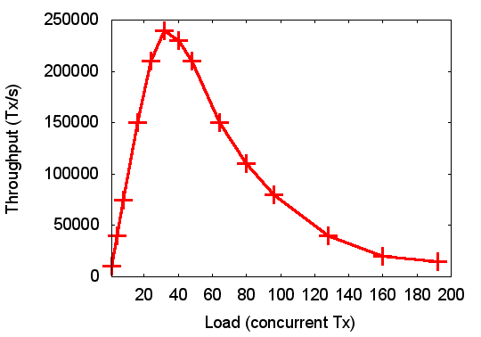

{kind=link}
Created 2010-01-05, last modified 2018-10-05, last validated 2018-10-05.
When reviewing systems papers (and sometimes even when reading published papers) I frequently come across highly misleading use of benchmarks. I'm not saying that the authors intend to mislead the reader, it's just as likely incompetence. But that isn't an excuse.
I call such cases benchmarking crimes. Not because you can go to jail for them (but probably should?) but because they undermine the integrity of the scientific process. Rest assured, if I'm a reviewer of your paper, and you commit one of those, you're already most of the way into rejection territory. The rest of the work must be pretty damn good to be forgiven a benchmarking crime (and even then you'll be asked to fix it up in the final version).
The following list is work in progress, I'll keep adding to it as I come across (or remember) more systems benchmarking crimes...
This is the mother of all benchmarking crimes: using a biased set of benchmarks to (seemingly) prove a point, which might be contradicted by a broader coverage of the evaluation space. It's a clear indication of at best gross incompetence or at worst an active attempt to deceive.
There are several variants of this crime, I list the most prominent ones. Obviously, not all instances of this are equally bad, in some cases it may just be a matter of degree of thoroughness, but in its most blatant form, this is a truly hideous crime.
A fair evaluation of a technique/design/implementation that is supposed to improve performance must actually demonstrate two things:
Both are important! You cannot easily argue that you've gained something if you improve performance at one end and degrade it at another.
Reality is that techniques that improve performance generally require some degree of extra work: extra bookkeeping, caching, etc. These things always have a cost, and it is dishonest to pretend otherwise. This is really at the heart of systems: it's all about picking the right trade-offs. A new technique will therefore almost always introduce some overheads, and you need to demonstrate that they are acceptable.
If you innovation does lead to a degree of degradation, then you need to analyse it, and build a case that it is acceptable given the other benefits. If, however, you only evaluate the scenarios where your approach is beneficial, you are being deceptive. No ifs, no buts.
I see this variant (which can actually be an instance of the previous one) frequently with SPEC benchmarks. These suites have been designed as suites for a reason: to be representative of a wide range of workloads, and to stress various aspects of a system.
However, it is also true that it is often not possible to run all of SPEC on an experimental system. Some SPEC programs require large memories (they are designed to stress the memory subsystem!) and it may be simply impossible to run them on a particular platform, particularly an embedded system. Others are FORTRAN programs, and a compiler may not be available.
Under such circumstances, it is unavoidable to pick a subset of the suite. However, it must then be clearly understood that the results are of limited value. In particular, it is totally unacceptable to quote an overall figure of merit (such as average speedup) for SPEC if a subset is used!
If a subset is used, it must be well justified. There must be convincing explanation for each missing program. And the discussion must be careful not to read too much into the results, keeping in mind that it is conceivable that any trend observed by the subset used could be reverted by programs not in the subset.
Where the above rules are violated, the reader is bound to suspect that the authors are trying to hide something. I am particularly allergic to formulations like “we picked a representative subset” or “typical results are shown”. There is no such thing as a “representative” subset of SPEC, and the ”typical” results are most likely cherry-picked to look most favourable. Expect no mercy for such a crime!
Lmbench is a bit of a special case. Its license actually forbids reporting partial results, but a complete lmbench run produces so many results that it is impossible to report in a conference paper. On the other hand, as this is a collection of micro-benchmarks which are probing various aspects of the OS, one generally understands what each measures, and may only be interested in a subset for good reasons. In that case, running the particular lmbench test has the advantage of measuring a particular system aspect in a well-defined, standardised way. This is probably OK, as long as not too much is being read into the results (and Larry McVoy doesn't sue you for license violation...)
A variant of this crime is arbitrarily picking benchmarks from a huge set. For example, when describing an approach to debug or optimise Linux drivers, there are obviously thousands of candidates. It may be infeasible to use them all, and you have to pick a subset. However, I want to understand why you picked the particular subset. Note that arbitrary is not the same as random, so a random pick would be fine. However, if your selection contains many obscure or outdated devices, or is heavily biased towards serial and LED drivers, then I suspect that you have something to hide.
This variant can again be viewed as an example of the first. Here the range of the input parameter is picked to make the system look good, but the range is not representative of a real workload. For example, the diagram on the right shows pretty good scalability of throughput as a function of load, and without any further details this looks like a nice result.
Things look a bit different when we put the graph into context. Say this is showing the throughput (number of transactions per second) of a database system with a varying number of clients. So far so good.
Is it still so good if I'm telling you that this was measured on a 32-core machine? What we see then is that the throughput scales almost linearly as long as there is at most one client per core. Now that is not exactly a typical load for a database. A single transaction is normally insufficient for keeping a core busy. In order to get the best of your hardware, you'll want to run the database so that there are in average multiple clients per core.
So, the interesting data range starts where the graph ends! What happens if we increase the load into the really interesting range is shown in the graph on the left. Clearly, things no longer look so rosy, in fact, scalability is appalling!
Note that, while somewhat abstracted and simplified, this is not a made-up example, it is taken from a real system, and the first diagram is equivalent to what was in a real publication. And the second diagram is essentially what was measured independently on the same system. Based on a true story, as they say...
Micro-benchmarks specifically probe a particular aspect of a system. Even if they are very comprehensive, they will not be representative of overall system performance. Macro-benchmarks (representing real-world workloads) must be used to provide a realistic picture of overall performance.
In rare cases, there is a particular operation which is generally accepted to be critical, and where significant improvements are reasonably taken as an indication of real progress. An example is microkernel IPC, which was long known to be a bottleneck, and reducing cost by an order of magnitude can therefore be an important result. And for a new microkernel, showing that it matches the best published IPC performance can indicate that it is competitive.
Such exceptions are rare, and in most cases it is unacceptable to make arguments on system performance based only on micro-benchmarks.
This vicious crime is committed by probably 10% of papers I get to review. If the throughput of a system is degraded by a certain percentage, it does not at all follow that the same percentage represents the overhead that was added. Quite to the contrary, in many cases the overhead is much higher. Why?
Assume you have a network stack which under certain circumstances achieves a certain throughput, and a modified network stack achieves 10% less throughput. What's the overhead introduced by the modification?
Without further information, it is impossible to answer that question. Why is throughput degraded? In order to answer that question, we need to understand what determines throughput in the first place. Assuming that there's more than enough incoming data to process, the amount of data the stack can handle depends mostly on two factors: processing (CPU) cost and latency.
Changes to the implementation (not protocols!) will affect processing cost as well as latency, but their effect on throughput is quite different. As long as CPU cycles are available, processing cost should have negligible effect on throughput, while latency may (packets will be dropped if not processed quickly enough). On the other hand, if the CPU is fully loaded, increasing processing cost will directly translate into latency.
Networks are actually designed to tolerate a fair amount of latency, so they shouldn't really be very sensitive to it. So, what's going on when throughput drops?
The answer is that either latency has grown substantially to show up in reduced throughput (likely much more than the observed degradation in throughput), or the CPU has maxed out. And if a doubling of latency results in a 10% drop of throughput, calling that “10% overhead” is probably not quite honest, is it?
If throughput was originally limited by CPU power (fully-loaded processor) then a 10% throughput degradation can be reasonably interpreted as 10% increased CPU cost, and that can be fairly called “10% overhead”. However, what if on the original system the CPU was 60% loaded, and on the modified system it's maxed out at 100% (and that leading to the performance degradation)? Is that still “10% overhead”?
Clearly not. A fair way to calculate overhead in this case would be to look at the processing cost per bit, which is proportional to CPU load divided by throughput. And on that measure, cost has gone up by 85%. Consequently, I would call that an 85% overhead!
A variant of this is to off-load some processing on a “free” core, and not including the load on that extra core in the processing cost. That's just cheating.
The bottom line is that incomplete information is presented which prevented us from really assessing the overhead/cost, and lead to a huge under-estimation. Throughput comparisons must always be accompanied by a comparison of complete CPU load. For I/O throughput, the proper way to compare is in terms of processing time per bit!
There are several ways people use to try to make their overheads look smaller than they are.
This one is confusing percentage with percentage points, regularly practiced (out of incompetence) by the media. That doesn't excuse doing the same in technical publications.
So the authors' modified system increases processing overheads from 6% (for the original system) to 13% (for theirs) and they sheepishly claim they only added 7% overhead. Of course, that's complete bullocks! They more than doubled the overhead, their system is less than half as good as the original!
Similarly, if your baseline system has a CPU utilisation of 26%, and your changes result in a utilisation of 46%, you haven't increased load by 20%, you almost doubled it! The dishonesty in the 20% claim becomes obvious if you consider what would happen if the same experiments were run on a machine exactly half as powerful: load would go from 52% to 92%, clearly not a 20% increase!
A particularly brazen example of creative accounting of overheads is in this paper (published in Usenix ATC, a reputable conference). In Table 3, the latency of the stat system call goes up from 0.39μs to 2.28μs, almost a six-fold increase. Yet the authors call it an “82.89% slowdown”! (Also note the pseudo accuracy; this is not a crime, but an indication of inability to understand numbers.)
Raw averages, without any indication of variance, can be highly misleading, as there is no indication of the significance of the results. Any difference between results from different systems might be just random.
In order to indicate significance, it is essential that at least standard deviations are quoted. Systems often behave in a highly deterministic fashion, in which case the standard deviation of repeated measurements may be very small. In such a case it might be sufficient to state that, for example, “all standard deviations were below 1%”. In such a case, if the effect we are looking at is, say, 10%, the reader can be reasonably comfortable with the significance of the results.
If in doubt use Student's t-test to check the significance.
Also, if you fit a line to data, quote at least a regression oefficient (unless it's obvious that there are lots of points nd the line passes right through all of them).
The arithmetic mean is generally not suitable for deriving an overall score from a set of different benchmarks (except where the absolute execution times of the various benchmarks have real significance). In particular the arithmetic mean has no meaning if individual benchmark scores are normalised (eg against a baseline system).
The proper way to average (i.e. arrive at a single figure of merit) is to use the geometric mean of scores [Fleming & Wallace, CACM (29), p 218].
It is sometimes unavoidable to base an evaluation on a simulated system. However, this is extremely dangerous, as a simulation is always a model, and contains a set of assumptions.
It is therefore essential to ensure that the simulation model does not make any simplifying assumption which will impact the performance aspect you are looking for. And, it is equally important to make it clear to the reader/reviewer that you really have made sure that the model is truly representative with respect to your benchmarks.
It is difficult to give general advice on how to do this. My best advice is to put yourself into the shoes of the reader, and even better to get an outsider to read your paper and check whether you have really made a convincing case.
I see people using benchmarks that are supposed to prove the point, when in fact they say almost nothing (and the only thing they could possibly show is truly aweful performance). Examples:
This one seems outright childish, but that doesn't mean you don't see it in papers submitted by (supposedly) adults. Someone is trying to demonstrate the multiprocessor scalability of their system by running many copies of SPEC CPU benchmarks.
Of course, these are uniprocessor programs which do not communicate. Further more, they perform very few system calls, and thus do not exercise the OS or underlying communication infrastructure. They should scale perfectly (at least for low processor counts). If not, there's serious brokenness in the OS or hardware. Real scalability tests would run workloads which actually communicate across processors and use system calls.
Again, this seems idiotic (or rather, is idiotic) but I've seen it nevertheless. People trying to demonstrate that their changes to a NIC driver or networking stack has low performance impact, by measuring the performance degradation of a CPU-intensive benchmark. Again, the only thing this can possibly prove is that performance sux, namely if there is any degradation at all!
This is a fairly widespread crime, and it's frankly an embarrassment for our discipline.
Systems work frequently uses models which have to be calibrated to operating conditions (eg. platform, workloads, etc). This is done with some calibration workloads. Then the system is evaluated, running an evaluation workload, to show how accurate the model is.
It should go without saying, but apparently doesn't, that the calibration and evaluation workloads must be different! In fact, they must be totally disjoint. It's incredible how many authors blatantly violate this simple rule.
Of course, the results of using the same data for calibration and validation are likely that the model appears accurate, after all, it's been designed to fit the experimental results. But all such an experiment can show is how well the model fits the existing data. It implies nothing about the predictive power of the model, yet prediction of future measurements is what models are all about!
This crime is related to the above. A typical case is comparing different virtualization approaches by only showing the performance of the two virtualized systems, without showing the real baseline case, which obviously is the native system. It's comparison against native which determines what's good or bad, not comparison against an arbitrary virtualization solution!
Consider the baseline carefully. Often it is the state-of-the-art solution. Often it is the optimal (or theoreticaly best) solution or a hardware limit (assuming zero software overhead). The optimal solution is usually impossible to implement in a system, because it requires knowledge of the future or magic zero-cost software, but it can often be computed “outside” the system and is an excellent base for comparison. In other cases the correct baseline it is in some sense an unperturbed system (as in the virtualization example above).
This is a variant of the above crime, but that doesn't make it rare. It might be exciting to you that you have improved the performance of your system over last year's paper, but I find it much less exciting. I want to see the significance, and that means comparing against some accepted standard.
At least this crime is less harmful that others in that it is pretty obvious, and rarely will a reviewer fall for it.
There's a variant of this crime which is more subtle: evaluating a model against itself. Someone builds a model of a system, making a number of simplifying assumptions, not all of them obviously valid. They build a solution for that problem, and then evaluate that solution on a simulated system that contains the exact same assumptions. The results look nice, of course, but they are also totally worthless, as there they are lacking the most basic reality check. This one I find a lot in papers which are already published. Depressing...
Doing benchmarks on your competitors yourself is tricky, and you must go out of your way to ensure that you do not treat them unfairly. I'm sure you tweaked your system as well as you could, but did you really go through the same effort with the alternative?
In order to reassure the reader/reviewer that you have been fair, describe clearly what you have done with the competitor system, e.g. fully describe all configuration parameters, etc. Be particularly circumspect if your results do not match any published data about the competitor system. If in doubt, contact the authors of that system to confirm that your measurements are fair.
Again, I have seen a case of this case of benchmarking abuse in a published paper, in that case the “competitor” system was mine. The authors of the paper failed to present any data on how they ran my system, and I strongly suspect that they got it wrong. For example, the default configuration of our open-source release had debugging enabled. Turning off that option (which, of course, you would in any production setting and any serious performance evaluation) improves performance massively.
The bottom line is that extreme care must be taken when doing your own benchmarking of a competitor system. It is easy to run someone else's system sub-optimally, and using sub-optimal results as a basis for comparison is highly unethical and probably constitutes scientific misconduct. And sloppiness is no excuse in such a case!
For reproducibility it is essential that the evaluation platform is well-specified, including all characteristics that may influence the results. Platform incorporates hardware and software.
Details depend a fair bit on what is being evaluated, but at the very least I expect to see the processor architecture, number of cores and clock rate, and memory sizes. For benchmarks involving networking the throughput supported by the NIC and switches if any. For benchmarks that exercise the memory system it is generally important to specify sizes and associativities of all levels of cache. In generaal it is good practice the list the model number of the CPU, core type and microarchitecture.
The same holds for the software. Specify the operating system and (where used) hypervisor are you running on, including release number. Compiler versions are often also relevant, as may be the version of other tools.
When running a benchmarking suite (such as SPEC) it is generally not sufficient to just quote the overall figure of merit of that suite. Instead, it is essential to show performance of the individual sub-benchmarks. Suites are designed to cover a range of load conditions, and some may benefit from your work while others are degraded. Only providing the overall score can at worst hide problems, and at best reduces the insights that can be obtained from the evaluation.
Always give complete result, not just ratios (unless the denominator is a standard figure). At best, seeing only relative numbers leaves me with a doubt as to whether the figures make sense at all, I'm robbed of a simple way to perform a sanity check. At worst, it can cover up that a result is really bad, or really irrelevant.
One of the worst instances I've seen of this crime was not in a paper I was reviewing, but one that was actually published. It compared the performance of two systems by showing the ratio of overheads: a ratio of two relative differences. This is too much relativity to read anything out of the numbers.
For example, assume that the overhead of one system is twice that of another. By itself, that tells us very little. Maybe we are comparing a tenfold with a twentyfold overhead. If so, who cares? Both are most likely unusable. Or maybe the overhead of one system is 0.1%, who cares if the other one has 0.2% overhead? The bottom line is we have no idea how significant the result is, yet the representation implies that it is highly significant.
The below benchmarking rules is what I tell my students. It's somewhat OS-oriented, but the basic principles apply generally.
With colleagues at VU Amsterdam I recently published a (non peer-reviewed) study of benchmarking crimes in the system security literature, with interesting results. It contains a further category that is not relevant to most systems work, but definitely to security work.
In my Advanced Operating Systems course I have a lecture on performance evaluation, which discusses many of these benchmarking crimes, and gives other useful hints on benchmarking and performance analysis.
If you are a student or early-career researcher, you might also be interested in my style guide for papers and theses.
|
Gernot Heiser, gernot@unsw.edu.au. Created 2010-01-05, last modified 2018-10-05, last validated 2018-10-05. |